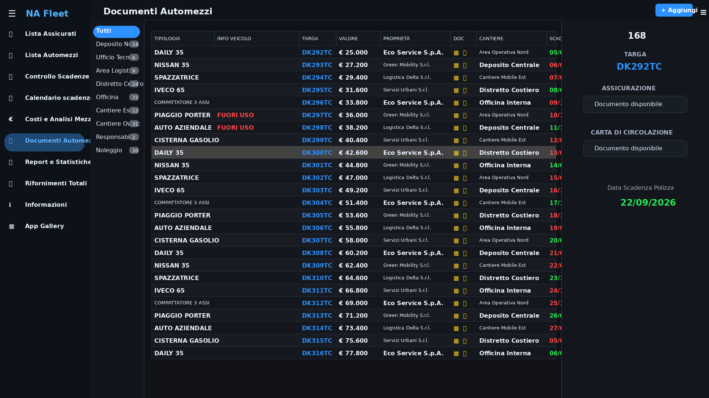
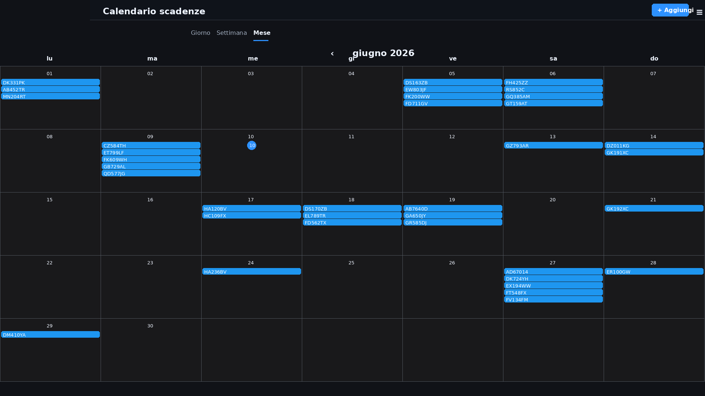

Quando la gestione dei mezzi diventa un rischio operativo.
Molte aziende gestiscono ogni giorno furgoni, autocarri, compattatori, mezzi operativi e veicoli di servizio. Ogni mezzo porta con sé documenti, scadenze, controlli e responsabilità .
Il problema nasce quando queste informazioni restano sparse tra fogli Excel, cartelle condivise, documenti cartacei o promemoria non aggiornati. Una polizza dimenticata o una revisione non controllata possono creare fermi veicolo, sanzioni e rallentamenti operativi.
Una web app dedicata permette di trasformare tutto questo in un sistema ordinato, accessibile e sempre aggiornato.
Controllo immediato della flotta.
La dashboard consente di visualizzare in un'unica schermata lo stato degli automezzi aziendali: tipologia, marca, targa, classe ambientale, proprietà , sede operativa, data di immatricolazione, telaio e scadenze principali.
I colori aiutano a individuare rapidamente le situazioni più importanti: scadenze regolari, scadenze da verificare e documenti che richiedono attenzione.

Archivio digitale dei documenti.
Ogni mezzo può avere una scheda dedicata con i documenti collegati: assicurazione, carta di circolazione, documentazione tecnica e allegati utili alla gestione amministrativa.
Il responsabile non deve cercare manualmente i file: seleziona il veicolo e trova subito le informazioni necessarie, con dati chiari e documenti consultabili in pochi secondi.
Calendario scadenze sempre visibile.
Le scadenze vengono organizzate anche in una vista calendario. Questo rende più semplice programmare revisioni, rinnovi assicurativi e controlli documentali.
La visualizzazione mensile aiuta a prevenire le dimenticanze e permette di pianificare il lavoro con anticipo, soprattutto quando la flotta è composta da molti veicoli.

Report e decisioni più rapide.
Oltre alla consultazione quotidiana, la piattaforma può generare report utili per capire lo stato documentale della flotta, le scadenze imminenti e i mezzi da aggiornare.
In questo modo l'azienda non lavora più inseguendo le urgenze: può controllare, pianificare e decidere con dati già organizzati.
- Report delle assicurazioni in scadenza.
- Controllo delle revisioni aggiornate.
- Elenco dei documenti presenti o da completare.
- Consultazione rapida per responsabili e amministrazione.